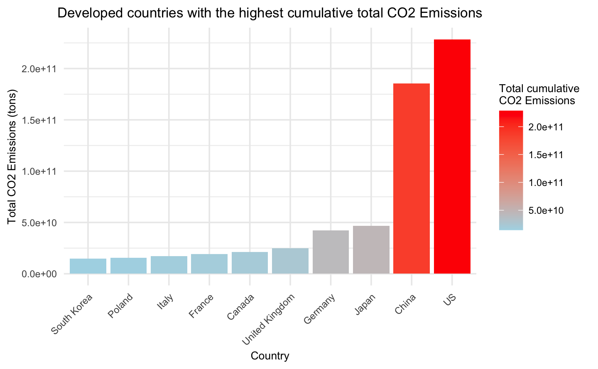

Let’s proceed with our exploratory data analysis to ensure a thorough analysis that will contribute to answering our research question. As mentioned in our data description, we’ve consolidated our principal variables into a single dataframe named raw_df. This particular dataframe retains this name because it presents data in its original form, without scaling for population size, which is useful for analyzing overall data patterns. Additionally, we have created all_df, a dataframe that standardizes data on a per capita basis for all of our 77 countries. These dataframes form the basis of our exploratory data analysis.
Code
# Creating the tabledata_table <-tibble(Variables =c("Country","Year", "CO2 emissions", "PM2.5", "Wind Generation - TWh", "Solar Generation - TWh", "Geo Biomass Other - TWh", "Hydro Generation - TWh", "Nuclear Generation - TWh", "Population"),Meaning =c("Country","Year","Country","Year", "TWh generation from Wind", "TWh generation from Solar", "TWh generation from Geothermal and others", "TWh generation from Hydro", "TWh generation from Nuclear", "Number of inhabitants in the country"))# Rendering the table with knitr::kableknitr::kable(data_table, format ="html", caption ="Table 3.1: raw_df")
Table 3.1: raw_df
Variables
Meaning
Country
Country
Year
Year
CO2 emissions
Country
PM2.5
Year
Wind Generation - TWh
TWh generation from Wind
Solar Generation - TWh
TWh generation from Solar
Geo Biomass Other - TWh
TWh generation from Geothermal and others
Hydro Generation - TWh
TWh generation from Hydro
Nuclear Generation - TWh
TWh generation from Nuclear
Population
Number of inhabitants in the country
Table 3.1: raw_df
Variables
Meaning
Country
Country
Year
Year
CO2 emissions
Country
PM2.5
Year
Wind Generation - TWh
TWh generation from Wind
Solar Generation - TWh
TWh generation from Solar
Geo Biomass Other - TWh
TWh generation from Geothermal and others
Hydro Generation - TWh
TWh generation from Hydro
Nuclear Generation - TWh
TWh generation from Nuclear
Population
Number of inhabitants in the country
We will begin this EDA by identifying any noticeable trends and data structure by contrasting data from all, developed and undeveloped countries. This will help us better understand the different effect that renewable energy generation may have depending of the development of countries. Subsequently, we will examine the specifics of renewable energy generation, CO2 emissions and PM2.5 exposure, looking at both the global perspective and individual country scale. Lastly, we will aim to explore the relationship between renewable energy generation, CO2 emissions, and PM2.5 levels.
3.1 Data distribution
3.1.1 Histogram plot
We begin our analysis by examining the spread of our numerical data. To visualize this, we have created a histogram that displays the distribution across all countries, as well as separately for developed and developing nations. This initial comparison will offer us a glimpse into how renewable energy generation and CO2 emissions vary among countries with diverse economic and demographic profiles.
Code
### Facet grid for histogram# Reshape our dataframes into a long format to create an histogramlongall_df <-melt(all100_1990[, -c(2,10)]) # for all countrylongdev_df <-melt(alldev100_1990[, -c(2,10)]) # for developed countrylongnondev_df <-melt(allnondev100_1990[, -c(2,10)]) # for non developed country# Add a new column to each to indicate the development statuslongall_df$Status <-'All'longdev_df$Status <-'Developed'longnondev_df$Status <-'Non-Developed'# Combine the three dataframes into onehcombined_df <-rbind(longall_df,longdev_df, longnondev_df)# Create histograms with facet_grid to ensure same scalesh <-ggplot(hcombined_df, aes(x = value)) +geom_histogram(bins =30, fill ="blue", color ="black") +facet_grid(Status ~ variable, scales ="free_x", labeller =labeller(variable =c("CO2_emissions"="CO2 Emissions","PM_exposure"="PM2.5 Exposure","wind_generation"="Wind Generation","solar_generation"="Solar Generation","geo_generation"="Geo Biomass","hydro_generation"="Hydro Generation","nuclear_generation"="Nuclear Generation"))) +scale_x_log10() +# Apply log scale for xtheme_minimal() +labs(x ="TWh generations for energy sources / CO2 emissions in tons", y ="Count") +theme(axis.text.x =element_text(angle =90, hjust =1, size =6),axis.text.y =element_text(size =6),axis.title.x =element_text(size =9),axis.title.y =element_text(size =9),strip.text.x =element_text(size =5), strip.text.y =element_text(size =8),plot.title =element_text(hjust =0.5, size =12) ) +ggtitle("Distribution of variables by development status")
Note : For this histogram plot, we’ve used our per capita dataframe, all_df, which has been multiplied by 100 to make low per capita values more visible, all100_df. This adjustment also allows us to apply log scaling for better visualization. The analysis focuses on data from 1990 to 2021 (all100_1990). This timeframe was chosen because it corresponds to a period when renewable energy generation started to gain more prominence globally. These choices aid in highlighting trends between developed and non-developed countries.
We observe variations in the data between developed and non-developed countries. Developed countries generally exhibit higher values for both CO2 emissions and energy generation. In contrast, the values for PM2.5 appear to be relatively similar for developed and non-developed countries.
3.1.2 Violion plot
To visually emphasize the transition towards higher values in developed countries, especially in terms of CO2 emissions and energy generation, we have created the following violin plot. This plot is designed to provide a clearer visual representation of this shift.
Code
#### Facet grid for violon plot# Melt and ad development statuslongdev_df <-melt(alldev100_1990[, -c(2, 4, 10)], variable.name ='EnergySource', value.name ='value') %>%mutate(DevelopmentStatus ='Developed')longnondev_df <-melt(allnondev100_1990[, -c(2, 4, 10)], variable.name ='EnergySource', value.name ='value') %>%mutate(DevelopmentStatus ='Non-Developed')# Set column names to be displayed in the violon plot col_names <-c("CO2_emissions"="CO2 Emissions","PM_exposure"="PM2.5 Exposure","wind_generation"="Wind Generation","solar_generation"="Solar Generation","geo_generation"="Geo Generation","hydro_generation"="Hydro Generation","nuclear_generation"="Nuclear Generation")# Rename columns in the melted data frameslongdev_df$EnergySource <-factor(longdev_df$EnergySource, levels =names(col_names), labels = col_names)longnondev_df$EnergySource <-factor(longnondev_df$EnergySource, levels =names(col_names), labels = col_names)# Combine the datasetsvcombined_df <-bind_rows(longdev_df, longnondev_df)# Filter to remove extreme values applying IQRvcombined_df <- vcombined_df %>%group_by(EnergySource) %>%mutate(lower_bound =quantile(value, 0.25) -1.5*IQR(value),upper_bound =quantile(value, 0.75) +1.5*IQR(value) ) %>%ungroup() %>%filter(value > lower_bound & value < upper_bound) %>%select(-lower_bound, -upper_bound)# Create a violin plot with a facet gridv <- vcombined_df %>%mutate(EnergySource =fct_reorder(EnergySource, value)) %>%ggplot(aes(x=EnergySource, y=value, fill=DevelopmentStatus)) +geom_violin(trim=FALSE, position=position_dodge(width=0.8), size=0.2) +scale_fill_viridis(discrete=TRUE, name="Development Status") +theme_ipsum() +facet_wrap(~ EnergySource, scales ="free") +theme(axis.title.x =element_text(hjust =0.5, size =15), axis.title.y =element_text(hjust =0.5, size =15),strip.text.y =element_text(size =12),strip.text.x =element_blank(),legend.text =element_text(size =14),legend.title =element_text(size =16),plot.title =element_text(face ="plain", hjust =0.5, size =22),legend.position ="bottom" ) +labs(x ="Count", y ="TWh generations / CO2 emissions in tons") +scale_y_continuous(limits =c(0, NA)) +# Set the y-axis to not go below 0ggtitle("Distribution of variables by development status")
Note : Just as for our histogram, we used the dataframe all100_1990 as a basis to have per capita values multiply by 100 from 1990. From that database, we separated developed and undeveloped countries into two distinct groups to compare them.
The violin plots in the graph illustrate the distribution of energy generation sources and CO2 emissions between developed and non-developed countries. Just as the previous histogram, we can see that developed countries exhibit higher values for solar, nuclear, wind, and geothermal energy generation, indicating more energy generation from develop than developing countries. Additionnaly, non developed country tend to have more values around 0 especially for solar, geo and wind energy. However, hydro generation distributions are similar for both developed and non-developed countries, reflecting its accessibility as an energy source regardless of development status. We can also notice that CO2 emissions per capita are higher in developed countries. However, while developed countries also exhibit greater renewable energy generation per capita, it cannot be conclusively determined from this visualization alone whether an increase in renewable energy generation leads to a change in CO2 emissions per capita.
3.1.3 Correlation matrix
The following correlation matrix for all countries provides a clearer visualization of the relationships among renewable energy generation, CO2 emissions, and PM2.5 exposure levels:
Code
### Correlation matrix# Remove non-numeric columns and rows with NA valuesalldf_numeric <- developed_df[, sapply(all_df, is.numeric)] # selects only columns that are numericalldf_numeric <-na.omit(alldf_numeric[, -c(1, 9)]) # removes row with NAs and columns 1, 9# Calculate the correlation matrix for all countryallcor_matrix <-cor(alldf_numeric)# Plot the correlation matrixcorrplot(allcor_matrix, method ="color", type ="lower", order ="original", addCoef.col ="black", tl.col ="black", tl.cex =0.6,tl.pos ="lt", # Place text labels on the left and toptl.srt =45, # Rotation of text labelscol =colorRampPalette(c("#6D9EC1", "white", "#E46726"))(200),cl.pos ="r",number.cex =0.6, # Make the correlation numbers smallertitle ="Correlation matrix for all countries",mar =c(0, 0, 2, 0))
Note : Correlation Matrix with data for all countries.
The correlation matrix displays the relationship between energy sources, CO2 emissions, and PM exposure. CO2 emissions share a positive correlation with PM exposure, signaling that areas with higher emissions tend to face increased particulate matter exposure. In contrast, energy sources such as wind, solar and nuclear generation have a slighter negative correlation with CO2 emissions, suggesting that their impact on reducing emissions might be present but limited. As for hydro and geothermal generation, they demonstrate almost no correlation with CO2 emissions, suggesting their impact on emissions is minimal or masked by other factors in this analysis.
Overall, while there is an apparent association between CO2 emissions and PM exposure, the link between renewable energy generation and CO2 emissions is less pronounced in this analysis. This could indicate that factors such as the overall energy policy, efficiency measures, and the balance between industrial output and energy consumption may also play significant roles in determining CO2 emissions beyond the scope of renewable energy generation alone.
3.2 EDA specifc to renewable energy observations
3.2.1 The Growth of Renewables
Our dataset commences in the 1960s, capturing a period marked by substantial transformations and growth in the adoption of renewable energy sources. The trends, shown graphically below, underscore a global shift toward sustainable and diversified energy sources, propelled by environmental consciousness, policy incentives, and technological advancements.
Code
### Area plot# Calculate annual total energy production by source for each yearraw_df_annual <- raw_df %>%filter(year <=2021) %>%pivot_longer(cols =c(wind_generation, solar_generation, geo_generation, hydro_generation, nuclear_generation),names_to ="source",values_to ="energy" ) %>%group_by(year, source) %>%summarize(total_energy =sum(energy, na.rm =TRUE) ) %>%ungroup()# Create an area plota <-ggplot(raw_df_annual, aes(x = year, y = total_energy, fill = source)) +geom_area() +labs(x ="Year",y ="Total Energy Production (TWh)",fill ="Energy Source") +scale_fill_manual(values =c("wind_generation"="#a6cee3", "solar_generation"="#FDBA74", "geo_generation"="#b2df8a", "hydro_generation"="#1f78b4", "nuclear_generation"="#B39EB5"),labels =c("wind_generation"="Wind", "solar_generation"="Solar", "geo_generation"="Geothermal", "hydro_generation"="Hydro", "nuclear_generation"="Nuclear")) +theme_minimal() +theme(plot.title =element_text(hjust =0.5, size =12),axis.text.y =element_text(size =7),axis.text.x =element_text(size =7),axis.title.x =element_text(size =9),axis.title.y =element_text(size =9),legend.text =element_text(size =8),legend.title =element_text(size =9), ) +ggtitle("Annual growth of total energy production by source")
The utilization of dams and reservoirs for hydroelectric energy generation as the primary source of renewable energy generation is clear from the early years of our data.
Although nuclear power began gaining traction in the 1970s, it witnessed a substantial surge in development in the mid-1980s, as numerous countries constructed reactors for high-density electricity production. Despite its potential, concerns about safety and waste management have tempered its growth.
Solar energy, driven by remarkable progress in photovoltaic technology, has exhibited exponential growth since approximately 2010, finding widespread application in residential and commercial settings.
Likewise, wind power, propelled by advancements in turbine technology, has undergone substantial expansion since the early 2000s, particularly through the establishment of onshore and offshore wind farms.
Geothermal energy, constrained by region-specific limitations, has experienced gradual adoption over the past six decades.
3.2.2 Countries Driving Transition
The traditional global leaders in renewable energy production of the United States, Canada, and France, have played a pivotal role in advancing cleaner and sustainable energy sources on a global scale. These nations have made significant strides, particularly in harnessing hydroelectric and nuclear energy resources.
Code
### TOTAL Renewable Energy Bar Chart # Calculate cumulative total energy production by countryraw_df_cumulative <- raw_df %>%group_by(country) %>%summarize(wind_total =sum(wind_generation, na.rm =TRUE),solar_total =sum(solar_generation, na.rm =TRUE),geo_total =sum(geo_generation, na.rm =TRUE),hydro_total =sum(hydro_generation, na.rm =TRUE),nuclear_total =sum(nuclear_generation, na.rm =TRUE),total_energy =sum(wind_total, solar_total, geo_total, hydro_total, nuclear_total) ) %>%ungroup() %>%arrange(total_energy) %>%top_n(10) # Reorder the levels of the country factorraw_df_cumulative$country <-reorder(raw_df_cumulative$country, raw_df_cumulative$total_energy)# Reshape the data to long format for stackingraw_df_cumulative_long <- raw_df_cumulative %>%pivot_longer(cols =c(wind_total, solar_total, geo_total, hydro_total, nuclear_total),names_to ="source",values_to ="cumulative_total" )# Create the stacked bar chartb1 <-ggplot(raw_df_cumulative_long, aes(x = country, y = cumulative_total, fill = source)) +geom_bar(stat ="identity") +labs(title ="Countries with historically the largest total renewable energy production",x ="Country",y ="Cumulative Energy Production (TWh)",fill ="Energy Source" ) +theme_minimal() +theme(axis.text.x =element_text(angle =45, hjust =1, size =7),axis.text.y =element_text(size =7),axis.title.x =element_text(size =9),axis.title.y =element_text(size =9),legend.text =element_text(size =8),legend.title =element_text(size =9),plot.title =element_text(hjust =0.5, size =11) )
Note : This plot presents the top 10 countries with the highest historical cumulative total renewable energy generation.
More recently, China has emerged as a key player in the renewable energy landscape, embarking on an ambitious journey to assert its dominance in this sector. Through substantial investments in solar and hydro power projects, China seeks to enhance its energy security and diversify its overall energy portfolio. This evolving landscape suggests a commitment among these major players to transition towards more sustainable and environmentally friendly energy solutions.
Code
### Line plot for renewable energy per country# Calculate the annual total energy production for each countryraw_df_total_energy <- raw_df %>%group_by(country, year) %>%summarize(total_energy =sum(wind_generation, solar_generation, geo_generation, hydro_generation, nuclear_generation)) %>%ungroup()# Filter the data to include only the top 10 countries with the highest annual total energy productiontop_10_countries <- raw_df_total_energy %>%group_by(country) %>%summarize(total_energy =sum(total_energy)) %>%ungroup() %>%arrange(desc(total_energy)) %>%slice_head(n =10) %>%#### -10 for the 10 lowestpull(country)filtered_data <- raw_df_total_energy %>%filter(country %in% top_10_countries)# Create an interactive line plot with hover labelsplot1 <-ggplot(filtered_data, aes(x = year, y = total_energy, group = country, color = country, text = country)) +geom_line() +labs(title ="Annual total renewable energy production over time by top 10 countries",x ="Year",y ="Energy Production (TWh)",color ="Country" ) +theme_minimal()+theme(plot.title =element_text(hjust =0.5, size =12),axis.title.y =element_text(size =9),axis.title.x =element_text(size =9),legend.text =element_text(size =8),legend.title =element_text(size =9),legend.key.size =unit(0.4, "cm"), legend.key.height =unit(0.4, "cm") )# Convert the ggplot to a plotly object for interactivityplotly_plot1 <-ggplotly(plot1, width =700, height =500, tooltip ="text")
3.2.3 Per Capita Leaders
The countries with the largest per capita renewable energy production are predominantly wealthier Nordic nations that boast expansive and diverse natural landscapes conducive to renewable energy generation. Hydroelectric power from cascading rivers, and favorable geographic conditions for geothermal energy. Their commitment to sustainable development, coupled with robust economic structures, has positioned them at the forefront of the global transition towards renewable energy.
Code
### Per Capita Renewable Energy Bar Chart # Calculate average total energy production by countryall_df_average <- all_df %>%group_by(country) %>%summarize(wind_avg =sum(wind_generation, na.rm =TRUE) /n(),solar_avg =sum(solar_generation, na.rm =TRUE) /n(),geo_avg =sum(geo_generation, na.rm =TRUE) /n(),hydro_avg =sum(hydro_generation, na.rm =TRUE) /n(),nuclear_avg =sum(nuclear_generation, na.rm =TRUE) /n(),total_energy_avg =sum(wind_avg, solar_avg, geo_avg, hydro_avg, nuclear_avg) ) %>%ungroup() %>%arrange(total_energy_avg) %>%top_n(10) ### 10 for 10 best or -10 for ten lowest# Reorder the levels of the country factorall_df_average$country <-reorder(all_df_average$country, all_df_average$total_energy_avg)# Reshape the data to long format for stackingall_df_average_long <- all_df_average %>%pivot_longer(cols =c(wind_avg, solar_avg, geo_avg, hydro_avg, nuclear_avg),names_to ="source",values_to ="average_total" )# Create the stacked bar chartb2 <-ggplot(all_df_average_long, aes(x = country, y = average_total, fill = source)) +geom_bar(stat ="identity") +labs(title ="Countries with historically the largest renewable energy production per capita",x ="Country",y ="Average Energy Production (TWh)",fill ="Energy Source" ) +theme_minimal() +theme(axis.text.x =element_text(angle =45, hjust =1, size =7),axis.text.y =element_text(size =7),axis.title.x =element_text(size =10),axis.title.y =element_text(size =10),legend.text =element_text(size =8),legend.title =element_text(size =9),plot.title =element_text(hjust =0.5, size =11))
Note : This plot presents the top 10 countries with the highest historical cumulative renewable energy generation per capita.
In particular, Iceland has leveraged its abundant geothermal resources, resulting from its location on the Mid-Atlantic Ridge, by harnessing geothermal and hydro energy for both electricity generation and heating, making it a global leader in per capita renewable energy production.
Code
### Line plot for renewable energy per country per capita# Calculate the annual total energy production for each countryall_df_total_energy <- all_df %>%group_by(country, year) %>%summarize(total_energy =sum(wind_generation, solar_generation, geo_generation, hydro_generation, nuclear_generation)) %>%ungroup()# Filter the data to include only the top 10 countries with the highest annual per capita energy productiontop_10_countries <- all_df_total_energy %>%group_by(country) %>%summarize(total_energy =sum(total_energy)) %>%ungroup() %>%arrange(desc(total_energy)) %>%slice_head(n =10) %>%#### slice_head for the 20 highest and slice_tail for the 20 lowestpull(country)filtered_data <- all_df_total_energy %>%filter(country %in% top_10_countries)# Create an interactive line plot with hover labelsplot2 <-ggplot(filtered_data, aes(x = year, y = total_energy, group = country, color = country, text = country)) +geom_line() +labs(title ="Annual per capita renewable energy production over time by top 10 countries",x ="Year",y ="Total Energy Production (TWh)",color ="Country" ) +theme_minimal()+theme(plot.title =element_text(hjust =0.5, size =12),axis.title.y =element_text(size =10),axis.title.x =element_text(size =10),legend.text =element_text(size =8),legend.title =element_text(size =9),legend.key.size =unit(0.4, "cm"), legend.key.height =unit(0.4, "cm") )# Convert the ggplot to a plotly object for interactivityplotly_plot2 <-ggplotly(plot2, width =700, height =500, tooltip ="text")
3.3 EDA Specifc to CO2 emissions
3.3.1 Cumulative CO2 emissions ranking
For the CO2 emissions analysis, we’ll concentrate on the top 10 countries with the highest cumulative CO2 emissions from both developed and developing countries, since they shape the overall emissions trend and are accountable for the major part of CO2 emissions. This focus will provide us with a more defined perspective on the prevailing trends and enable an analysis of disparities between developed and developing nations.
The following bar plot present the developed countries with the highest CO2 emissions per capita, highlighting Qatar’s significant lead, followed by countries like the United Arab Emirates and Luxembourg, with the remaining nations showing comparatively lower emissions. Assessing emissions per capita is useful because it enables meaningful comparisons to be made between countries regardless of their population size.
Code
#### BAR CHART PER CAPITA FOR DEVELOPED COUNTRY# Calculate the cumulative CO2 emissions per capita for each countrydev_df_cumulative_co2 <- developed_df %>%group_by(country) %>%summarize(co2_cumulative =sum(CO2_emissions, na.rm =TRUE) ) %>%ungroup() %>%arrange(desc(co2_cumulative)) %>%top_n(10, co2_cumulative) # Top 10 countries with the highest total CO2 emissions# Create the bar chart for cumulative CO2 emissions per capitap1 <-ggplot(dev_df_cumulative_co2, aes(x =reorder(country, co2_cumulative), y = co2_cumulative, fill = co2_cumulative)) +geom_bar(stat ="identity") +scale_fill_gradient(low ="lightblue", high ="red", name ="Cumulative CO2\nEmissions per capita") +labs(title ="Developed countries with the highest cumulative CO2 emissions per capita",x ="Country",y ="Cumulative CO2 Emissions per capita" ) +theme_minimal() +theme(axis.text.x =element_text(angle =45, hjust =1, size =7),axis.text.y =element_text(size =7),axis.title.x =element_text(size =8),axis.title.y =element_text(size =8),legend.text =element_text(size =7),legend.title =element_text(size =8),plot.title =element_text(hjust =0.5, size =10))
Note : This plot presents the top 10 developed countries with the highest historical cumulative CO2 emissions per capita.
As for the CO2 emissions per capita of developing countries, the bar plot highlights that Kuwait stands out with the highest figures, followed by Trinidad & Tobago and Turkmenistan. This visual representation confirms that while developing nations are generally associated with lower emissions, there are exceptions where emissions are quite substantial.
Code
##### BAR CHART PER CAPITA FOR NON-DEVELOPED COUNTRY# Calculate the cumulative CO2 emissions per capita for each countrynondev_df_cumulative_co2 <- nondev_df %>%group_by(country) %>%summarize(co2_cumulative =sum(CO2_emissions, na.rm =TRUE) ) %>%ungroup() %>%arrange(desc(co2_cumulative)) %>%top_n(10, co2_cumulative) # Top 10 countries with the highest total CO2 emissions# Create the bar chart for cumulative CO2 emissions per capitap2 <-ggplot(nondev_df_cumulative_co2, aes(x =reorder(country, co2_cumulative), y = co2_cumulative, fill = co2_cumulative)) +geom_bar(stat ="identity") +scale_fill_gradient(low ="lightblue", high ="red", name ="Cumulative CO2\nEmissions per capita") +labs(title ="Developing countries with the highest cumulative CO2 emissions per capita",x ="Country",y ="Cumulative CO2 Emissions per capita" ) +theme_minimal() +theme(axis.text.x =element_text(angle =45, hjust =1, size =7),axis.text.y =element_text(size =7),axis.title.x =element_text(size =8),axis.title.y =element_text(size =8),legend.text =element_text(size =7),legend.title =element_text(size =8),plot.title =element_text(hjust =0.5, size =10))
Note : This plot presents the top 10 developing countries with the highest historical cumulative CO2 emissions per capita.
Now shifting our analysis to total emissions, this plot illustrates which developed countries are the largest total producers of CO2. The graph showcases the US and China as the predominant emitters, with their total output far exceeding that of other nations on the list. The substantial difference in emissions between these two countries and the rest highlights the significant role they play in global CO2 production.
Code
### BAR CHART TOTAL FOR DEVELOPED COUNTRIES# Calculate the total CO2 emissions for each country by multiplying per capita emissions with populationdev_df_total_co2 <- developed_df %>%mutate(total_CO2_emissions = CO2_emissions * Population) %>%group_by(country) %>%summarize(co2_total =sum(total_CO2_emissions, na.rm =TRUE) ) %>%ungroup() %>%arrange(desc(co2_total)) %>%top_n(10, co2_total) # top_n with 10 to get the top 10# Create the bar chart for total CO2 emissions with gradient fillp3 <-ggplot(dev_df_total_co2, aes(x =reorder(country, co2_total), y = co2_total, fill = co2_total)) +geom_bar(stat ="identity") +scale_fill_gradient(low ="lightblue", high ="red", name ="Total cumulative \nCO2 Emissions") +labs(title ="Developed countries with the highest cumulative total CO2 Emissions",x ="Country",y ="Total CO2 Emissions (tons)" ) +theme_minimal() +theme( axis.text.x =element_text(angle =45, hjust =1, size =7),axis.text.y =element_text(size =7),axis.title.x =element_text(size =8),axis.title.y =element_text(size =8),legend.text =element_text(size =7),legend.title =element_text(size =8),plot.title =element_text(hjust =0.5, size =10))

Note : This plot presents the top 10 developed countries with the highest historical cumulative total CO2 emissions.
Regarding the total cumulative CO2 emissions of developing nations, the following bar chart underlines the dominant emissions from India and Russia, suggesting the intensity of their economic activities and energy use patterns. The visible gap in emissions across these countries highlight the varied stages of industrial growth and energy infrastructure among these countries.
Code
#### BAR CHART TOTAL FOR NON-DEVELOPED COUNTRIES# Calculate the total CO2 emissions for each country by multiplying per capita emissions with populationnondev_df_total_co2 <- nondev_df %>%mutate(total_CO2_emissions = CO2_emissions * Population) %>%group_by(country) %>%summarize(co2_total =sum(total_CO2_emissions, na.rm =TRUE) ) %>%ungroup() %>%arrange(desc(co2_total)) %>%top_n(10, co2_total) # top_n with 10 to get the top 10# Create the bar chart for total CO2 emissions with gradient fillp4 <-ggplot(nondev_df_total_co2, aes(x =reorder(country, co2_total), y = co2_total, fill = co2_total)) +geom_bar(stat ="identity") +scale_fill_gradient(low ="lightblue", high ="red", name ="Total cumulative \nCO2 Emissions") +labs(title ="Developing countries with the highest cumulative total CO2 emissions",x ="Country",y ="Total CO2 Emissions (tons)" ) +theme_minimal() +theme( axis.text.x =element_text(angle =45, hjust =1, size =7),axis.text.y =element_text(size =7),axis.title.x =element_text(size =8),axis.title.y =element_text(size =8),legend.text =element_text(size =7),legend.title =element_text(size =8),plot.title =element_text(hjust =0.5, size =10) )
Note : This plot presents the top 10 developing countries with the highest historical cumulative total CO2 emissions.
3.3.2 Are We Reducing CO2 Emissions?
Its all well and good expanding our renewable energy potential, but what is the outlook on the global carbon emissions? A discernible divergence is apparent between developed and undeveloped nations. Developed countries are witnessing a downward trend in per capita CO2 emissions, potentially indicative of their concerted efforts towards sustainable and eco-friendly practices. Conversely, non-developed nations are experiencing an upward trajectory in per capita CO2 emissions. This surge could be attributed to industrialization, increased consumption, and or limited access to clean energy technologies.
Code
### CO2 Emissions Per Capita Change Line Plot# Calculate the yearly mean for developed nationsdeveloped_mean <- developed_df %>%group_by(year) %>%summarize(mean_CO2 =mean(CO2_emissions))# Calculate the yearly mean for undeveloped nationsnondev_mean <- nondev_df %>%group_by(year) %>%summarize(mean_CO2 =mean(CO2_emissions))# Combine the mean data framesmean_df <-bind_rows(mutate(developed_mean, category ="Developed"),mutate(nondev_mean, category ="Undeveloped"))# Plot for Developed and Undeveloped Nations with Yearly Meanl1 <-ggplot(bind_rows(developed_df, nondev_df), aes(x = year, y = CO2_emissions, color =factor("developed"))) +geom_line(data = mean_df, aes(x = year, y = mean_CO2, color = category), size =1) +labs(title ="CO2 emissions per capita : developed vs undeveloped",x ="Year",y ="Per Capita CO2 Emissions (Tons)",color ="Category" ) +scale_color_manual(values =c("Developed"="blue", "Undeveloped"="red")) +theme_minimal() +theme(plot.title =element_text(size =11),axis.title.y =element_text(size =9),axis.title.x =element_text(size =9),legend.text =element_text(size =8),legend.title =element_text(size =9),legend.key.size =unit(0.4, "cm"), legend.key.height =unit(0.4, "cm") )
Note : The 1991 surge in CO2 emissions in undeveloped countries, shown in the chart, corresponds to the Kuwaiti oil fires (https://visibleearth.nasa.gov/images/78594/kuwait-oil-fires), not a data error.
Delving deeper into the individual country trajectories within the top 10 cumulative CO2 emitters per capita, we observe a trend that aligns with the earlier discussion. Developed nations, in general, demonstrate a pattern of either constancy or decline in emissions per capita. This is particularly noticeable for countries such as the United Arab Emirates and Luxembourg, which exhibit a marked decrease. Similarly, Qatar shows a pronounced reduction in emissions per capita since the year 2000. This trend could be explained by the maturation of industrialization in developed countries, where growth in heavy industries has plateaued and advancements in technology have led to more efficient processes. The advancements in technology and a transition to less carbon-intensive operations might be one of the reasons of this consistent and sometimes declining pattern in CO2 emissions per capita for developed countries.
Code
### LINE PLOT PER CAPITA FOR DEVELOPED COUNTRY# Exclude the year 2022 from the dataset as we don't have that year for CO2 emissionsdev_df_filtered <- developed_df %>%filter(!(year ==2022))# Calculate the annual total CO2 emissions for each countrydev_df_total_CO2 <- dev_df_filtered %>%group_by(country, year) %>%summarize(total_CO2_emissions =sum(CO2_emissions, na.rm =TRUE)) %>%ungroup()# Filter the data to include only the top 10 countries with the highest annual total CO2 emissionstop_10_countries_CO2 <- dev_df_total_CO2 %>%group_by(country) %>%summarize(total_CO2_emissions =sum(total_CO2_emissions, na.rm =TRUE)) %>%ungroup() %>%arrange(desc(total_CO2_emissions)) %>%slice_head(n =10) %>%#### slice_head for the 10 highest and slice_tail for the 10 lowestpull(country)filtered_data_CO2 <- dev_df_total_CO2 %>%filter(country %in% top_10_countries_CO2)# Create an interactive line plot with hover labels for CO2 emissionsplot_CO2 <-ggplot(filtered_data_CO2, aes(x = year, y = total_CO2_emissions, group = country, color = country, text = country)) +geom_line() +labs(title ="Annual CO2 emissions per capita change of top 10 developed countries",x ="Year",y ="CO2 Emissions per capita",color ="Country" ) +theme_minimal() +theme(plot.title =element_text(hjust =0.6, size =12),axis.title.y =element_text(size =10),axis.title.x =element_text(size =10),legend.text =element_text(size =8),legend.title =element_text(size =9),legend.key.size =unit(0.4, "cm"), legend.key.height =unit(0.4, "cm") )# Convert the ggplot to a plotly object for interactivityplotly_CO2_devcapita <-ggplotly(plot_CO2, width =700, height =500, tooltip ="text")
Note : For CO2 emissions, we have observations until 2021.
In contrast to developed countries, the trend in CO2 emissions per capita among non-developed countries typically shows an increasing pattern, as illustrated by the following plot. Kuwait is an exception, with a notable decrease leading up to 1980. Following this period, Kuwait’s emissions per capita align with the general trend of other non-developed countries, exhibiting a slight increase. The trajectories of the remaining countries underscore a consistent slight climb in emissions over the years. The persistent upward trend in emissions among these nations is indicative of their developmental trajectories, which often involve scaling up industrial activities, energy production, and urbanization. These processes, central to economic growth, tend to increase the demand for energy, frequently met through carbon-intensive sources that contribute to higher per capita CO2 emissions.
Code
### LINE PLOT PER CAPITA FOR NON-DEVELOPED COUNTRY# Exclude the year 2022 from the dataset as we don't have that year for CO2 emissionsnondev_df_filtered <- nondev_df %>%filter(!(year ==2022), !(country =="Kuwait"& year ==1991)) # purposely remove 1991 for kuwait because of the oil fire anomaly# Calculate the annual total CO2 emissions for each countrynondev_df_total_CO2 <- nondev_df_filtered %>%group_by(country, year) %>%summarize(total_CO2_emissions =sum(CO2_emissions, na.rm =TRUE)) %>%ungroup()# Filter the data to include only the top 10 countries with the highest annual total CO2 emissionstop_10_countries_CO2 <- nondev_df_total_CO2 %>%group_by(country) %>%summarize(total_CO2_emissions =sum(total_CO2_emissions, na.rm =TRUE)) %>%ungroup() %>%arrange(desc(total_CO2_emissions)) %>%slice_head(n =10) %>%#### slice_head for the 10 highest and slice_tail for the 10 lowestpull(country)filtered_data_CO2 <- nondev_df_total_CO2 %>%filter(country %in% top_10_countries_CO2)# Create an interactive line plot with hover labels for CO2 emissionsplot_CO2 <-ggplot(filtered_data_CO2, aes(x = year, y = total_CO2_emissions, group = country, color = country, text = country)) +geom_line() +labs(title ="Annual CO2 emissions per capita change of top 10 developing countries",x ="Year",y ="CO2 Emissions per capita",color ="Country" ) +theme_minimal() +theme(plot.title =element_text(hjust =0.6, size =12),axis.title.y =element_text(size =10),axis.title.x =element_text(size =10),legend.text =element_text(size =8),legend.title =element_text(size =9),legend.key.size =unit(0.4, "cm"), legend.key.height =unit(0.4, "cm") )# Convert the ggplot to a plotly object for interactivityplotly_CO2_nondevcapita <-ggplotly(plot_CO2, width =700, height =500, tooltip ="text")
However the contrasting trajectories from the per capita emissions, don’t tell the whole story. Below we can see that in taking the total emissions, both developed and undeveloped countries for much of the last 60 years have followed similar increasing trends.
Code
### CO2 Emissions Total Change Line Plot# Converting CO2 emissions per capita in total valuesdeveloped_df1 <- developed_df %>%mutate(product = Population * CO2_emissions)nondev_df1 <- nondev_df %>%mutate(product = Population * CO2_emissions)# Calculate the annual total for the product in developed nationsdeveloped_total <- developed_df1 %>%group_by(year) %>%summarize(total_product =sum(product))# Calculate the annual total for the product in undeveloped nationsnondev_total <- nondev_df1 %>%group_by(year) %>%summarize(total_product =sum(product))# Combine the total data framestotal_product_df <-bind_rows(mutate(developed_total, category ="Developed"),mutate(nondev_total, category ="Undeveloped"))# Plot for Developed and Undeveloped Nations with Yearly Total (Product)l2 <-ggplot(bind_rows(developed_df, nondev_df), aes(x = year, y = product, color =factor("developed"))) +geom_line(data = total_product_df, aes(x = year, y = total_product, color = category), size =1) +labs(title ="Total CO2 Emissions : developed vs undeveloped",x ="Year",y ="Total CO2 Emissions",color ="Category" ) +scale_color_manual(values =c("Developed"="blue", "Undeveloped"="red")) +theme_minimal() +theme(plot.title =element_text(size =11),axis.title.y =element_text(size =9),axis.title.x =element_text(size =9),legend.text =element_text(size =8),legend.title =element_text(size =9),legend.key.size =unit(0.4, "cm"), legend.key.height =unit(0.4, "cm") )
Taking a closer look once again into the country-level details for a more precise understanding, the first graph reveals that the uptrend in total CO2 emissions among developed countries has been predominantly driven by the United States and particularly China since 1980. This increase in emissions from the United States and China reflects their expansive industrial activities, driven by significant economic growth and a large consumer base compare to other developed countries. Therefore, the emissions from China and the US are substantially higher than those of other developed countries, making it difficult to discern the individual impact and trends of other nations within the overall upward trajectory of developed countries’ emissions.
Code
### TOTAL LINE PLOT FOR DEVELOPED WITH CHINA AND US# Exclude the year 2022 from the dataset as we don't have that year for CO2 emissionsdev_df_filtered <- developed_df %>%filter(!(year ==2022))# Calculate the annual total CO2 emissions for each countrydev_df_total_CO2 <- dev_df_filtered %>%group_by(country, year) %>%summarize(total_CO2_emissions =sum(CO2_emissions*Population, na.rm =TRUE)) %>%ungroup()# Filter the data to include only the top 10 countries with the highest annual total CO2 emissionstop_10_countries_CO2 <- dev_df_total_CO2 %>%group_by(country) %>%summarize(total_CO2_emissions =sum(total_CO2_emissions, na.rm =TRUE)) %>%ungroup() %>%arrange(desc(total_CO2_emissions)) %>%slice_head(n =10) %>%#### slice_head for the 10 highest and slice_tail for the 10 lowestpull(country)filtered_data_CO2 <- dev_df_total_CO2 %>%filter(country %in% top_10_countries_CO2)# Create an interactive line plot with hover labels for CO2 emissionsplot_CO2 <-ggplot(filtered_data_CO2, aes(x = year, y = total_CO2_emissions, group = country, color = country, text = country)) +geom_line() +labs(title ="Annual total CO2 emissions change of top 10 developed countries",x ="Year",y ="Total CO2 Emissions",color ="Country" ) +theme_minimal() +theme(plot.title =element_text(hjust =0.5, size =12),axis.title.y =element_text(size =10),axis.title.x =element_text(size =10),legend.text =element_text(size =8),legend.title =element_text(size =9),legend.key.size =unit(0.4, "cm"), legend.key.height =unit(0.4, "cm") )# Convert the ggplot to a plotly object for interactivityplotly_CO2_devtotal1 <-ggplotly(plot_CO2, width =700, height =500, tooltip ="text")
By setting aside the data from the US and China, this graph allows us to identify more specific trends among the remaining developed countries. Initially, there’s an observable increase in CO2 emissions across all these nations until the 1980s. Following the 1980s, a split in trends becomes apparent. Indeed we can observe that Germany, France, Italy, and Poland either stabilize or see a decline in their emissions. On the other hand, other developed countries persist with an upward trajectory in CO2 emissions. This trend is interrupted in 2020, with a steep decline across the board, which can be attributed to the economic disruptions caused by the COVID-19 pandemic, leading to reduced industrial operations and travel. However, as the world began to recover economically post-2020, there’s a significant resurgence in CO2 emissions among all developed countries, suggesting a rebound in industrial activities and transportation.
This individual country-level analysis is important as it highlights that while some nations are managing to reduce their total CO2 emissions, their efforts are offset on a global scale by others that maintain a high increase in CO2 emissions.
Code
### TOTAL LINE PLOT FOR DEVELOPED WITHOUT CHINA AND US# Exclude the year 2022 from the dataset as we don't have that year for CO2 emissions and china and US to have better visualizationdev_df_filtered <- developed_df %>%filter(!(year ==2022), !(country =="China"), !(country =="US")) # Calculate the annual total CO2 emissions for each countrydev_df_total_CO2 <- dev_df_filtered %>%group_by(country, year) %>%summarize(total_CO2_emissions =sum(CO2_emissions*Population, na.rm =TRUE)) %>%ungroup()# Filter the data to include only the top 10 countries with the highest annual total CO2 emissionstop_10_countries_CO2 <- dev_df_total_CO2 %>%group_by(country) %>%summarize(total_CO2_emissions =sum(total_CO2_emissions, na.rm =TRUE)) %>%ungroup() %>%arrange(desc(total_CO2_emissions)) %>%slice_head(n =10) %>%#### slice_head for the 10 highest and slice_tail for the 10 lowestpull(country)filtered_data_CO2 <- dev_df_total_CO2 %>%filter(country %in% top_10_countries_CO2)# Create an interactive line plot with hover labels for CO2 emissionsplot_CO2 <-ggplot(filtered_data_CO2, aes(x = year, y = total_CO2_emissions, group = country, color = country, text = country)) +geom_line() +labs(title ="Annual total CO2 emissions change of top 10 developed countries",x ="Year",y ="Total CO2 Emissions",color ="Country" ) +theme_minimal() +theme(plot.title =element_text(hjust =0.5, size =12),axis.title.y =element_text(size =10),axis.title.x =element_text(size =10),legend.text =element_text(size =8),legend.title =element_text(size =9),legend.key.size =unit(0.4, "cm"), legend.key.height =unit(0.4, "cm") )# Convert the ggplot to a plotly object for interactivityplotly_CO2_devtotal2 <-ggplotly(plot_CO2, width =700, height =500, tooltip ="text")
Similar to developed nations, the following graph indicates that developing countries are experiencing an increasing trend in CO2 emissions. The rise is particularly notable in India, which, as one of the most populous nations with rapid economic growth, contributes significantly to this trend. In contrast, Russia, Ukraine, and Kazakhstan display a decrease in emissions, likely a result of the economic and industrial challenges they faced following the dissolution of the USSR.
Code
#### TOTAL LINEPLOT FOR NON-DEVELOPED # Exclude the year 2022 from the dataset as we don't have that year for CO2 emissionsnondev_df_filtered <- nondev_df %>%filter(!(year ==2022), !(country =="Kuwait"& year ==1991)) # purposely remove 1991 kuwait because of the oil fire anomaly # Calculate the annual total CO2 emissions for each countrynondev_df_total_CO2 <- nondev_df_filtered %>%group_by(country, year) %>%summarize(total_CO2_emissions =sum(CO2_emissions*Population, na.rm =TRUE)) %>%ungroup()# Filter the data to include only the top 10 countries with the highest annual total CO2 emissionstop_10_countries_CO2 <- nondev_df_total_CO2 %>%group_by(country) %>%summarize(total_CO2_emissions =sum(total_CO2_emissions, na.rm =TRUE)) %>%ungroup() %>%arrange(desc(total_CO2_emissions)) %>%slice_head(n =10) %>%#### slice_head for the 10 highest and slice_tail for the 10 lowestpull(country)filtered_data_CO2 <- nondev_df_total_CO2 %>%filter(country %in% top_10_countries_CO2)# Create an interactive line plot with hover labels for CO2 emissionsplot_CO2 <-ggplot(filtered_data_CO2, aes(x = year, y = total_CO2_emissions, group = country, color = country, text = country)) +geom_line() +labs(title ="Annual total CO2 emissions change of top 10 developing countries",x ="Year",y ="Total CO2 Emissions",color ="Country" ) +theme_minimal() +theme(plot.title =element_text(hjust =0.5, size =12),axis.title.y =element_text(size =10),axis.title.x =element_text(size =10),legend.text =element_text(size =8),legend.title =element_text(size =9),legend.key.size =unit(0.4, "cm"), legend.key.height =unit(0.4, "cm") )# Convert the ggplot to a plotly object for interactivityplotly_CO2_nondevtotal <-ggplotly(plot_CO2, width =700, height =500, tooltip ="text")
Note : Data for Russia, Ukraine, and Kazakhstan is available from 1984 onwards, as they were previously constituents of the USSR.
These analysis suggests that despite a decreasing trend in CO2 emissions per capita in some developed countries, global total CO2 emissions continue to rise. This increase is largely driven by the significant economic and population growth in countries like the US, China and India but also by other developing countries. Although individual nations such as Germany, France, Italy, and Poland have shown reductions or stabilization in total CO2 emissions, these positive changes are overshadowed by increases elsewhere. This overall trajectory indicates that, without substantial and coordinated global efforts to curb emissions across both developed and developing countries, the trend of rising total emissions is likely to persist.
In line with the methodology applied to CO2 emissions, our focus now shifts to the PM2.5 exposure across the globe. By examining the top 10 developed and developing countries with the highest cumulative PM exposure, we aim to pinpoint where the need for air quality improvement is most pressing and to observe where the most significant changes over time can be discerned.
The following bar plot illustrates the top 10 developed countries with the highest cumulative PM exposure, clearly showing Qatar leading substantially, with Saudi Arabia, United Arab Emirates and China also exhibiting high levels. The graph also highlights the significant disparities in PM exposure within these nations, with countries like Slovenia, Slovakia, and Israel displaying considerably lower levels in comparison. This underscores the fact that even within developed nations, there can be considerable disparities in air quality.
Code
### BAR CHART FOR DEVELOPED COUNTRIES FOR PM# Calculate the cumulative PM exposure for each countrydev_df_cumulative_pm <- rawdev_df %>%group_by(country) %>%summarize(pm_total =sum(PM_exposure, na.rm =TRUE) ) %>%ungroup() %>%arrange(desc(pm_total)) %>%top_n(10, pm_total) # Use top_n with 10 to get the top 10# Reshape the data to long format for plottingdev_df_cumulative_pm_long <- dev_df_cumulative_pm %>%pivot_longer(cols = pm_total,names_to ="source",values_to ="cumulative_total" )# Create the bar chart for PM exposurepm1 <-ggplot(dev_df_cumulative_pm_long, aes(x =reorder(country, cumulative_total), y = cumulative_total, fill = cumulative_total)) +geom_bar(stat ="identity") +scale_fill_gradient(low ="lightblue", high ="red", name ="Total PM\nExposure") +labs(title ="Developed countries with the highest cumulative PM2.5 exposure",x ="Country",y ="Cumulative PM Exposure",fill ="PM Source" ) +theme_minimal() +theme( axis.text.x =element_text(angle =45, hjust =1, size =7),axis.text.y =element_text(size =7),axis.title.x =element_text(size =8),axis.title.y =element_text(size =8),legend.text =element_text(size =7),legend.title =element_text(size =8),plot.title =element_text(hjust =0.5, size =10) )
Note : This plot presents the top 10 developed countries with the highest historical cumulative PM2.5 exposure.
As for developing nations, India stands out with notably high levels, reflecting the substantial air quality challenges that accompany rapid industrialization and urbanization in populous nations. Close behind, Egypt, Kuwait, Pakistan and Bangladesh also register significant PM exposure, underscoring the environmental pressures of economic and infrastructural development. In contrast to the varied PM exposure levels observed in developed countries, this plot reveals a more consistent pattern of high PM exposure across the board for developing nations, highlighting the challenge of air pollution for these countries.
Code
### BAR CHART FOR NON-DEVELOPED COUNTRIES FOR PM# Calculate the cumulative PM exposure for each countrynondev_df_cumulative_pm <- rawnondev_df %>%group_by(country) %>%summarize(pm_total =sum(PM_exposure, na.rm =TRUE) ) %>%ungroup() %>%arrange(desc(pm_total)) %>%top_n(10, pm_total) # Use top_n with 10 to get the top 10# Reshape the data to long format for plottingnondev_df_cumulative_pm_long <- nondev_df_cumulative_pm %>%pivot_longer(cols = pm_total,names_to ="source",values_to ="cumulative_total" )# Create the bar chart for PM exposurepm2 <-ggplot(nondev_df_cumulative_pm_long, aes(x =reorder(country, cumulative_total), y = cumulative_total, fill = cumulative_total)) +geom_bar(stat ="identity") +scale_fill_gradient(low ="lightblue", high ="red", name ="Total PM\nExposure") +labs(title ="Non-developed countries with the highest cumulative PM2.5 exposure",x ="Country",y ="Cumulative PM Exposure",fill ="PM Source" ) +theme_minimal() +theme( axis.text.x =element_text(angle =45, hjust =1, size =7),axis.text.y =element_text(size =7),axis.title.x =element_text(size =8),axis.title.y =element_text(size =8),legend.text =element_text(size =7),legend.title =element_text(size =8),plot.title =element_text(hjust =0.5, size =10) )
Note : This plot presents the top 10 developing countries with the highest historical cumulative PM2.5 exposure.
3.4.2 Better News on PM 2.5?
The following graph presents a comparative trend of average PM2.5 exposure between developed and undeveloped nations from 1990 to 2019. As we can see, developed countries experienced a slight decline from 1990 to 2010 and a substantial fall after 2010, indicating a significant reduction in PM2.5 exposure over time. This suggests effective measures have been implemented to improve air quality, potentially including stricter regulations, cleaner technologies, and increased public awareness in these countries.
In contrast, the red line represents undeveloped countries, showing a less pronounced decline over the past 30 years. The flatter trend suggests that while there may have been some improvements, especially around 2010, the reduction in PM2.5 exposure is not substantial enough to reach the exposure level of developed nations. This could be due to a variety of factors including slower implementation of air quality regulations, ongoing industrialization, and limited resources for environmental management.
The contrast between the two lines, not only in terms of changes but also in absolute values, highlights the disparities in air quality management and public health outcomes between developed and undeveloped nations. It underscores the need for increased efforts to reduce air pollution in undeveloped countries to improve health and environmental conditions. The data suggests that while there is a global trend towards better air quality, the progress is uneven and more attention may be needed in undeveloped regions to achieve similar outcomes as seen in developed countries.
Code
### LINE PLOT FOR PM DEV VS UNDEV# Years for which we have PM exposure datayears_with_data <-c(1990, 1995, 2000, 2005, 2010:2019)# Filter for only the years with PM exposure data for developed countriesdeveloped_df_filtered <- rawdev_df %>%filter(year %in% years_with_data) %>%mutate(product = PM_exposure)# Do the same for non-developed countriesnondev_df_filtered <- rawnondev_df %>%filter(year %in% years_with_data) %>%mutate(product = PM_exposure)# Calculate the annual total PM2.5 exposure product for developed nationsdeveloped_total <- developed_df_filtered %>%group_by(year) %>%summarize(total_product =sum(product, na.rm =TRUE)) %>%mutate(category ="Developed")# Calculate the annual total PM2.5 exposure product for undeveloped nationsnondev_total <- nondev_df_filtered %>%group_by(year) %>%summarize(total_product =sum(product, na.rm =TRUE)) %>%mutate(category ="Undeveloped")# Combine the total data framestotal_product_df <-bind_rows(developed_total, nondev_total)# Plot for Developed and Undeveloped Nations with Yearly Total PM2.5 Exposure (Product)plot_devpm <-ggplot(total_product_df, aes(x = year, y = total_product, color = category, group = category)) +geom_line(size =1) +labs(title ="Total PM2.5 Exposure : developed vs undeveloped",x ="Year",y ="Total PM2.5 Exposure",color ="Category" ) +scale_color_manual(values =c("Developed"="blue", "Undeveloped"="red")) +theme_minimal() +theme(plot.title =element_text(size =11),axis.title.y =element_text(size =9),axis.title.x =element_text(size =9),legend.text =element_text(size =8),legend.title =element_text(size =9),legend.key.size =unit(0.4, "cm"), legend.key.height =unit(0.4, "cm") )
Note : Data for PM2.5 exposure are available for the years 1990, 1995, 2000, 2005, and annually from 2010 to 2019.
Once again, let’s take a closer look to identify trend in PM2.5 exposure between developed and developing nations at the country level. This line graph illustrates the trajectory of PM exposure for the top 10 developed countries with the highest cumulative exposure which reveals a complex and varied landscape. Since 1990, the trends do not follow a uniform pattern; for instance, Saudi Arabia, Qatar, United Arab Emirates and China haven’t experienced any significant decrease in PM2.5 exposure over time.
Code
### LINE PLOT FOR DEVELOPED COUNTRIES FOR HIGH PM# Years for which we have PM exposure datayears_with_data <-c(1990, 1995, 2000, 2005, 2010:2019)# Filter for only the years with PM exposure datadev_df_filtered <- rawdev_df %>%filter((year %in% years_with_data))# Calculate cumulative PM exposure for each country to select the 10 lowesttop_10_countries_pm <- dev_df_filtered %>%group_by(country) %>%summarize(cumulative_pm_exposure =sum(PM_exposure, na.rm =TRUE)) %>%ungroup() %>%arrange(desc(cumulative_pm_exposure)) %>%# To have descending orderslice_head(n =10) %>%# To have the highest exposurepull(country)# Keep only the top 10 countries with the lowest cumulative PM exposurefiltered_data_pm <- dev_df_filtered %>%filter(country %in% top_10_countries_pm)# Create an interactive line plot with hover labels for PM exposureplot_pm <-ggplot(filtered_data_pm, aes(x = year, y = PM_exposure, group = country, color = country, text = country)) +geom_line() +labs(title ="Annual change of highest PM2.5 exposure for top 10 developed countries",x ="Year",y ="Annual PM Exposure",color ="Country" ) +theme_minimal() +theme(plot.title =element_text(hjust =0.5, size =11),axis.title.y =element_text(size =9),axis.title.x =element_text(size =9),legend.text =element_text(size =8),legend.title =element_text(size =9),legend.key.size =unit(0.4, "cm"), legend.key.height =unit(0.4, "cm") )# Convert the ggplot to a plotly object for interactivityplotly_devpm1 <-ggplotly(plot_pm, width =700, height =500, tooltip ="text")
On closer examination, excluding Saudi Arabia, Qatar, the United Arab Emirates, and China, we can discern a more substantial decline in exposure levels for developed nations with high exposure except for South Korea and Singapore. This suggests that, while these countries have made notable progress, others have experienced minimal improvement or encountered difficulties in reducing PM2.5 pollution.
Code
### LINE PLOT FOR DEVELOPED COUNTRIES FOR HIGH PM WITHOUT TOO HIGH VALUES# Years for which we have PM exposure datayears_with_data <-c(1990, 1995, 2000, 2005, 2010:2019)# Filter for only the years with PM exposure data and countries with too high values for better visualisationdev_df_filtered <- rawdev_df %>%filter((year %in% years_with_data) &!(country %in%c("China", "Qatar", "Saudi Arabia", "United Arab Emirates")))# Calculate cumulative PM exposure for each country to select the 10 lowesttop_10_countries_pm <- dev_df_filtered %>%group_by(country) %>%summarize(cumulative_pm_exposure =sum(PM_exposure, na.rm =TRUE)) %>%ungroup() %>%arrange(desc(cumulative_pm_exposure)) %>%# To have descending orderslice_head(n =10) %>%# To have the highest exposurepull(country)# Keep only the top 10 countries with the lowest cumulative PM exposurefiltered_data_pm <- dev_df_filtered %>%filter(country %in% top_10_countries_pm)# Create an interactive line plot with hover labels for PM exposureplot_pm <-ggplot(filtered_data_pm, aes(x = year, y = PM_exposure, group = country, color = country, text = country)) +geom_line() +labs(title ="Annual change of highest PM2.5 exposure for top 10 developed countries",x ="Year",y ="Annual PM Exposure",color ="Country" ) +theme_minimal() +theme(plot.title =element_text(hjust =0.5, size =11),axis.title.y =element_text(size =9),axis.title.x =element_text(size =9),legend.text =element_text(size =8),legend.title =element_text(size =9),legend.key.size =unit(0.4, "cm"), legend.key.height =unit(0.4, "cm") )# Convert the ggplot to a plotly object for interactivityplotly_devpm2 <-ggplotly(plot_pm, width =700, height =500, tooltip ="text")
Note : In this plot, we remove the observation of China, Qatar, Saudi Arabia and United Arab Emirates as it was difficult too highlight a trend for the countries with lower values.
What about developed countries with lower PM2.5 exposure level ? The following plot suggests that every nation with relatively low PM2.5 exposure levels has experienced significant reductions over time. The consistent decline across these countries reinforces the idea that effective PM reduction strategies are in place and can yield positive results for developed nations with lower exposure.
Code
### LINE PLOT FOR DEVELOPED COUNTRIES FOR LOW PM# Years for which we have PM exposure datayears_with_data <-c(1990, 1995, 2000, 2005, 2010:2019)# Filter for only the years with PM exposure datadev_df_filtered <- rawdev_df %>%filter(year %in% years_with_data)# Calculate cumulative PM exposure for each country to select the 10 lowesttop_10_countries_pm <- dev_df_filtered %>%group_by(country) %>%summarize(cumulative_pm_exposure =sum(PM_exposure, na.rm =TRUE)) %>%ungroup() %>%arrange(desc(cumulative_pm_exposure)) %>%# To have descending orderslice_tail(n =10) %>%# To have the highest exposurepull(country)# Keep only the top 10 countries with the lowest cumulative PM exposurefiltered_data_pm <- dev_df_filtered %>%filter(country %in% top_10_countries_pm)# Create an interactive line plot with hover labels for PM exposureplot_pm <-ggplot(filtered_data_pm, aes(x = year, y = PM_exposure, group = country, color = country, text = country)) +geom_line() +labs(title ="Annual change of lowest PM2.5 exposure for top 10 developed countries",x ="Year",y ="Annual PM Exposure",color ="Country" ) +theme_minimal() +theme(plot.title =element_text(hjust =0.5, size =11),axis.title.y =element_text(size =9),axis.title.x =element_text(size =9),legend.text =element_text(size =8),legend.title =element_text(size =9),legend.key.size =unit(0.4, "cm"), legend.key.height =unit(0.4, "cm") )# Convert the ggplot to a plotly object for interactivityplotly_devpm3 <-ggplotly(plot_pm, width =700, height =500, tooltip ="text")
In the context of developing nations, we observe the same phenomenon as in developed countries when analyzing PM2.5 exposure, but it appears more pronounced. Indeed, all the top 10 developing countries with the highest exposure do not show any significant decrease over time. The following plot reveals a pattern of minor increases or stabilization rather than a clear decline. This pattern contrasts with the overall reduction trend in PM exposure that has been observed globally for developing nations, although slight.
Code
### LINE PLOT FOR NON-DEVELOPED COUNTRIES FOR HIGH PM# Years for which we have PM exposure datayears_with_data <-c(1990, 1995, 2000, 2005, 2010:2019)# Filter for only the years with PM exposure datanondev_df_filtered <- rawnondev_df %>%filter(year %in% years_with_data)# Calculate cumulative PM exposure for each country to select the 10 lowesttop_10_countries_pm <- nondev_df_filtered %>%group_by(country) %>%summarize(cumulative_pm_exposure =sum(PM_exposure, na.rm =TRUE)) %>%ungroup() %>%arrange(desc(cumulative_pm_exposure)) %>%# To have descending orderslice_head(n =10) %>%# To have the highest exposurepull(country)# Keep only the top 10 countries with the lowest cumulative PM exposurefiltered_data_pm <- nondev_df_filtered %>%filter(country %in% top_10_countries_pm)# Create an interactive line plot with hover labels for PM exposureplot_pm <-ggplot(filtered_data_pm, aes(x = year, y = PM_exposure, group = country, color = country, text = country)) +geom_line() +labs(title ="Annual change of highest PM2.5 exposure for top 10 developing countries",x ="Year",y ="Annual PM Exposure",color ="Country" ) +theme_minimal() +theme(plot.title =element_text(hjust =0.5, size =11),axis.title.y =element_text(size =9),axis.title.x =element_text(size =9),legend.text =element_text(size =8),legend.title =element_text(size =9),legend.key.size =unit(0.4, "cm"), legend.key.height =unit(0.4, "cm") )# Convert the ggplot to a plotly object for interactivityplotly_nondevpm1 <-ggplotly(plot_pm, width =700, height =500, tooltip ="text")
So, which developing countries are responsible for the reduction trend in PM2.5 exposure ? To address this question, we must analyze developing nations with lower exposure levels. The graph for developing countries with the lowest levels of PM exposure demonstrates a substantial decrease. This indicates that, much like developed countries, but more markedly, developing nations starting with lower levels of PM2.5 have been more successful in implementing effective air quality management strategies than developing nations with higher exposure, leading to more significant improvements over time.
Code
### LINE PLOT FOR NON-DEVELOPED COUNTRIES FOR LOW PM# Years for which we have PM exposure datayears_with_data <-c(1990, 1995, 2000, 2005, 2010:2019)# Filter for only the years with PM exposure datanondev_df_filtered <- rawnondev_df %>%filter(year %in% years_with_data)# Calculate cumulative PM exposure for each country to select the 10 lowesttop_10_countries_pm <- nondev_df_filtered %>%group_by(country) %>%summarize(cumulative_pm_exposure =sum(PM_exposure, na.rm =TRUE)) %>%ungroup() %>%arrange(desc(cumulative_pm_exposure)) %>%# To have descending orderslice_tail(n =10) %>%# To have the highest exposurepull(country)# Keep only the top 10 countries with the lowest cumulative PM exposurefiltered_data_pm <- nondev_df_filtered %>%filter(country %in% top_10_countries_pm)# Create an interactive line plot with hover labels for PM exposureplot_pm <-ggplot(filtered_data_pm, aes(x = year, y = PM_exposure, group = country, color = country, text = country)) +geom_line() +labs(title ="Annual change of lowest PM2.5 exposure for top 10 developing countries",x ="Year",y ="Annual PM Exposure",color ="Country" ) +theme_minimal() +theme(plot.title =element_text(hjust =0.5, size =11),axis.title.y =element_text(size =9),axis.title.x =element_text(size =9),legend.text =element_text(size =8),legend.title =element_text(size =9),legend.key.size =unit(0.4, "cm"), legend.key.height =unit(0.4, "cm") )# Convert the ggplot to a plotly object for interactivityplotly_nondevpm2 <-ggplotly(plot_pm, width =700, height =500, tooltip ="text")
Concluding our analysis of PM exposure levels, we must acknowledge the complexity in drawing health-related conclusions from our dataset. The figures represent an annual average across entire countries, which may obscure localized PM concentrations that are typically higher in urban areas. Therefore, it’s impractical to declare specific national levels as universally dangerous without considering regional variations and city-level data.
Contrasting PM exposure with CO2 emissions reveals a somewhat optimistic picture. Unlike the consistent rise in CO2 emissions, PM exposure levels are declining in both developed and developing countries, indicating progressive strides in air quality management. Despite this positive trend, it’s clear that developing countries still have significant room for improvement to achieve the air quality standards seen in more developed nations.
3.6 The 2019 Overview: Renewable Energies, Emissions, and PM2.5 Exposure
After analyzing the trends for renewable energy generation, CO2 emissions, and PM2.5 exposure, the following interactive map provides a snapshot of the global situation in 2019. This visual tool allows us to explore the interplay between renewable energy generation and the environmental indicators of CO2 emissions and PM2.5 exposure levels.
The interactive map reveals that countries in the Middle East are characterized by high levels of both CO2 emissions and PM2.5 exposure. However, the relationship between CO2 emissions and PM2.5 exposure is not uniform across the board. For instance, countries like China, Egypt, and India, despite their relatively lower CO2 emissions in 2019, still faced significant levels of PM2.5 exposure. This suggests that other factors, possibly including industrial processes, vehicular emissions, and regional environmental policies, play critical roles in determining air quality. Conversely, countries such as Australia, Canada, and the United States registered significant CO2 emissions but comparatively low levels of PM2.5 exposure. These observations may reflect effective air quality management strategies, the geographical dispersion of pollution sources, or a higher adoption of advanced technologies for emissions control in these regions.
In concluding the analysis of renewable energy generation on the interactive map, it is evident that while countries like China and the United States exhibit substantial energy production across all five renewable sources, there exists a marked variation among other countries. For instance, nations such as France and Russia are prominent in nuclear energy generation but lag in harnessing other renewable forms. Similarly, Germany, India, and Brazil prominently utilize geothermal resources, yet their exploitation of alternative renewable sources remains limited. This pattern suggests that beyond the United States and China, countries often do not fully capitalize on every renewable energy opportunity, likely due to the interplay of multiple influencing factors such as infrastructure capabilities, climatic conditions, political will, and economic policies.
Code
### INTERACTIVE MAPfiltered_data_raw <- raw_df %>%filter(year ==2019) # We choose 2019 as its the latest observations we have for pm2.5# Update menus componentupdatemenus <-list(list(active =0,x =0.2,y =0.99,buttons =list(list(label ="Solar",method ="update",args =list(list(visible =c(TRUE, FALSE, FALSE, FALSE, FALSE, TRUE, TRUE))) ),list(label ="Wind",method ="update",args =list(list(visible =c(FALSE, TRUE, FALSE, FALSE, FALSE, TRUE, TRUE))) ),list(label ="Hydro",method ="update",args =list(list(visible =c(FALSE, FALSE, TRUE, FALSE, FALSE, TRUE, TRUE))) ),list(label ="Nuclear",method ="update",args =list(list(visible =c(FALSE, FALSE, FALSE, TRUE, FALSE, TRUE, TRUE))) ),list(label ="Geo",method ="update",args =list(list(visible =c(FALSE, FALSE, FALSE, FALSE, TRUE, TRUE, TRUE))) ) ) ))### Create the interactive map int <-plot_geo(filtered_data_raw, locationmode ='country names') %>%add_trace(z =~solar_generation,locations =~country,color =~solar_generation,colors ='Reds',name ='Solar',colorbar =list(title ="Solar Generation (TWh)", len =1, y =0.1, orientation ="h") ) %>%add_trace(z =~wind_generation,locations =~country,color =~wind_generation,name ='Wind',colorbar =list(title ="Wind Generation (TWh)", len =1, y =0.1, orientation ="h"),visible =FALSE ) %>%add_trace(z =~hydro_generation,locations =~country,color =~hydro_generation,name ='Hydro',colorbar =list(title ="Hydro Generation (TWh)", len =1, y =0.1, orientation ="h"),visible =FALSE ) %>%add_trace(z =~nuclear_generation,locations =~country,color =~nuclear_generation,name ='Nuclear',colorbar =list(title ="Nuclear Generation (TWh)", len =1, y =0.1, orientation ="h"),visible =FALSE ) %>%add_trace(z =~geo_generation,locations =~country,color =~geo_generation,name ='Geo',colorbar =list(title ="Geo Generation (TWh)", len =1, y =0.1, orientation ="h"),visible =FALSE ) %>%add_trace(type ='scattergeo', # Specify the trace typemode ='markers', # Use markerslocations =~country, # Specify countries as locationsmarker =list(size =~CO2_emissions, # Size of the markers based on CO2 emissionscolor ='black', # Marker colorsizemode ='area', # The size of the marker represents an areasizeref =0.08, # Adjust this value to scale marker sizesline =list(color ="rgb(40,40,40)", width =0.5) ),name ='Total CO2 Emissions' ) %>%add_trace(type ='scattergeo', # Specify the trace typemode ='markers', # Use markerslocations =~country, # Specify countries as locationsmarker =list(size =~PM_exposure, # Size of the markers based on CO2 emissionscolor ='grey', # Marker colorsizemode ='area', # The size of the marker represents an areasizeref =0.2, # Adjust this value to scale marker sizesline =list(color ="rgb(40,40,40)", width =0.5) ),name ='PM Exposure' ) %>%layout(title ="Total renewable energy generation (2019)",showlegend =TRUE,updatemenus = updatemenus,geo =list(showland =TRUE,landcolor =toRGB("gray95"),countrycolor =toRGB("gray80") ),annotations =list(list(text ="<b>Click to hide circle</b>", x =1.04, y =0.19, xref ="paper",yref ="paper",xanchor ='left', yanchor ='top', align ='left',showarrow =FALSE,font =list(size =12, color ="black" ) ) ),margin =list(t =100# Reduce the top margin to bring the title closer to the map ) )
Note : This interactive map displays data for the year 2019, which represents the most recent year for which we have observations of PM2.5 exposure.
3.5 Relationship Between Renewable Energy Generation, CO2 emissions and PM2.5 exposure
The exploration thus far has provided a comprehensive overview of the status and trends in renewable energy generation, CO2 emissions, and PM2.5 exposure. However, the exploratory data analysis conducted does not allow us to conclude that changes in CO2 emissions and PM2.5 exposure are solely due to the rise in renewable energy use.. This observation underscores the complexity of these phenomena and the multifaceted interplay of various factors influencing them. Thereofre, to uncover potential underlying relationships or causations, a more in-depth analysis of these correlations is required.
3.5.1 Renewable Energies’ impact on CO2 emissions
Upon closer examination, the advantages of renewable energy, regrettably, don’t always align with visual impressions. The depicted graph underscores the intricate relationship between average total renewable energy generation and CO2 emissions. This positive relationships sheds light on the imperative need for decisive measures from the world’s major CO2 emitters, emphasizing that reducing emissions demands concerted efforts beyond merely introducing new renewable energy projects. This comparison suggests that merely increasing renewable energy generation is insufficient to offset the escalation of CO2 emissions resulting from economic growth, industrialization, transportation, and related factors.
Code
### TOTAL AVG RENEWABLE VS C02# Calculate average renewable energy production across the yearsavg_renewables <- raw_df %>%group_by(country) %>%summarize(avg_wind =mean(wind_generation, na.rm =TRUE),avg_solar =mean(solar_generation, na.rm =TRUE),avg_geo =mean(geo_generation, na.rm =TRUE),avg_hydro =mean(hydro_generation, na.rm =TRUE),avg_nuclear =mean(nuclear_generation, na.rm =TRUE) ) %>%mutate(avg_renewables =rowMeans(select(., starts_with("avg")), na.rm =TRUE) )# Calculate average CO2 emissions across the yearsavg_co2 <- raw_df %>%group_by(country) %>%summarize(avg_CO2 =mean(CO2_emissions * Population, na.rm =TRUE))# Merge the two datasetsmerged_data <-merge(avg_renewables, avg_co2, by ="country")# Create a scatter plot with hover labels and trend lineavg1 <-ggplot(merged_data, aes(x = avg_CO2, y = avg_renewables, label = country)) +geom_point() +geom_text_repel(box.padding =0.5, segment.size =0.2) +# Add labels on hovergeom_smooth(method ="lm", se =FALSE, color ="blue") +# Add a linear regression linelabs(title ="Total Average : Renewable Energy vs CO2 Emissions",x ="Average Total Renewable Energy Generated (TWh)", y ="Average Total CO2 Emissions (Tons)" ) +theme_minimal() +theme(plot.title =element_text(size =11),axis.title.y =element_text(size =8),axis.title.x =element_text(size =8), )
Yet, amidst the challenges, some nations stand out for their commendable efforts. Iceland and Norway, in particular, showcase noteworthy commitment, achieving high per capita renewable energy generation coupled with relatively low per capita CO2 emissions. Additionally, there are noteworthy positive outliers in the cases of Sweden and Switzerland, albeit to a lesser extent. These instances further underscore the potential impact of wealthy nations implementing robust renewable energy strategies as effective measures to mitigate carbon emissions. Nevertheless, these isolated instances do not provide enough evidence to draw any global-scale conclusions regarding the impact of renewable energy generation on CO2 emissions.
Code
### PER CAPITA AVG RENEWABLE VS C02# Calculate average renewable energy production across the yearsavg_renewablesall <- all_df %>%group_by(country) %>%summarize(avg_wind =mean(wind_generation, na.rm =TRUE),avg_solar =mean(solar_generation, na.rm =TRUE),avg_geo =mean(geo_generation, na.rm =TRUE),avg_hydro =mean(hydro_generation, na.rm =TRUE),avg_nuclear =mean(nuclear_generation, na.rm =TRUE) ) %>%mutate(avg_renewables =rowMeans(select(., starts_with("avg")), na.rm =TRUE) )# Calculate average CO2 emissions across the yearsavg_co2 <- all_df %>%group_by(country) %>%summarize(avg_CO2 =mean(CO2_emissions, na.rm =TRUE))# Merge the two datasetsmerged_data <-merge(avg_renewablesall, avg_co2, by ="country")# Create a scatter plot with hover labels and trend lineavg2 <-ggplot(merged_data, aes(x = avg_renewables, y = avg_CO2, label = country)) +geom_point() +geom_text_repel(box.padding =0.5, segment.size =0.2, size =3) +# Add labels on hovergeom_smooth(method ="lm", se =FALSE, color ="blue") +# Add a linear regression linelabs(title ="Per Capita Average : Renewable Energy Generation vs CO2 Emissions",x ="Average Per Capita Renewable Energy Generation (TWh)",y ="Average Per Capita CO2 Emissions (Tons)" ) +theme_minimal() +theme(plot.title =element_text(size =11),axis.title.y =element_text(size =8),axis.title.x =element_text(size =8), )
In the following graph, we observe a certain randomness in our data. Despite increasing renewable energy production year over year (seen by almost all of the points being above 0% on the y axis), there is no apparent trend in decreasing CO2 emissions(a roughly 50/50 spread of data either side of the 0% on the x axis). The intricacies of this relationship may be influenced by numerous factors, including the energy-intensive nature of building renewable infrastructure. As we are currently in the adoption phase, a substantial portion of the energy used for infrastructure development still originates from CO2-emitting sources. This complexity underscores the multifaceted nature of the data points and the evolving dynamics within the renewable energy landscape.
Code
### YEARLY CHANGE CO2 VS RENEW# Calculate yearly rate of change of total renewable energy as a percentageraw_df_rate_change <- raw_df %>%group_by(year) %>%summarize(total_renewable_energy =sum(wind_generation, solar_generation, geo_generation, hydro_generation, nuclear_generation),CO2_emissions =sum(CO2_emissions) ) %>%mutate(rate_change_renewable =c(NA, (diff(total_renewable_energy) /lag(total_renewable_energy)) *100)[-1]) %>%mutate(CO2_emissions_change = (CO2_emissions /lag(CO2_emissions) -1) *100)# Create scatter plot with a line of best fit using ggplotc <-ggplot(raw_df_rate_change, aes(x = CO2_emissions_change, y = rate_change_renewable, label = year)) +geom_point() +geom_text_repel(box.padding =0.5, segment.size =0.2) +# Add labels on hovergeom_smooth(method ="lm", se =FALSE, color ="blue", size =0.5) +labs(title ="Yearly change : Renewable energy generation vs CO2 emissions",x ="Yearly Rate of Change of CO2 Emissions (%)",y ="Yearly Rate of Change of Total Renewable Energy (%)", ) +theme_minimal() +theme(plot.title =element_text(size =11),axis.title.y =element_text(size =8),axis.title.x =element_text(size =8), )
Upon closer examination at the country level, we can still identify instances in which an increase in renewable energy is accompanied by a decrease in CO2 emissions. However, even among the countries with the highest cumulative renewable energy generation per capita, it remains challenging to discern a significant overall trend. The plot comparing changes in CO2 emissions per capita and renewable energy generation per capita over time for these high-renewable-generation countries reveals a nuanced picture. Notably, Switzerland and France experienced a reduction in CO2 emissions alongside increased renewable energy generation, while Iceland, to a lesser extent, exhibited a notable slowdown in emissions growth despite a substantial increase in renewable energy. Nonetheless, for the majority of cases, a clear-cut relationship is elusive. Additionnaly, it’s essential to highlight that our analysis encompasses both high and low renewable energy generation countries, and even among the nations with the highest renewable generation, a definitive negative relationship between renewable energy generation and CO2 emissions is not readily apparent. This underscores the challenge, as for countries with lower renewable energy generation, the absence of a discernible relationship becomes even more pronounced.
Code
### FACET GRID PER COUNTRY RENEW VS CO2# Calculate total renewable energy production for each country and yeartotal_renewables <- all_df %>%group_by(country, year) %>%summarize(total_renewables =sum(wind_generation, solar_generation, geo_generation, hydro_generation, nuclear_generation, na.rm =TRUE) ) %>%ungroup()# Calculate PM exposure for each country and year without filteringpm_exposure <- raw_df %>%group_by(country, year) %>%summarize(PM_exposure =mean(PM_exposure, na.rm =TRUE)) %>%ungroup()# Merge the total renewables data with the PM exposure data using a left joinmerged_data <-merge(total_renewables, pm_exposure, by =c("country", "year"), all.x =TRUE)# Identify the top 10 countries with the highest total renewable energy productiontop_countries <- merged_data %>%group_by(country) %>%summarize(total_renewables =sum(total_renewables, na.rm =TRUE)) %>%ungroup() %>%arrange(desc(total_renewables)) %>%slice_head(n =9) %>%pull(country)# Filter the data for only these top countriesfiltered_data <- merged_data %>%filter(country %in% top_countries)# Normalize the data for PM exposure and renewable energy to allow using a secondary y-axismax_PM <-max(filtered_data$PM_exposure, na.rm =TRUE)max_renewables <-max(filtered_data$total_renewables, na.rm =TRUE)filtered_data <- filtered_data %>%mutate(norm_PM = PM_exposure / max_PM,norm_renewables = total_renewables / max_renewables)# Assuming the rest of your code is correct and the data is prepared as `filtered_data`# Create a line plot with two separate y-axes and legends for PM Exposure and Renewable Energyfg1 <-ggplot(filtered_data, aes(x = year)) +geom_line(aes(y = norm_renewables, group = country, color = country, linetype ="Renewable Energy")) +geom_line(data = filtered_data %>%filter(year %in% years_with_data), aes(y = norm_PM, group = country, color = country, linetype ="PM Exposure"), color ="grey") +facet_wrap(~ country, scales ='free_x') +# Allows each country to have its own x-axis scalescale_y_continuous("Normalized Renewable Energy Generation",sec.axis =sec_axis(~ ., name ="Normalized PM Exposure") ) +scale_x_continuous(limits =c(1990, 2020)) +labs(title ="Renewable energy generation vs PM exposure by country",x ="Year" ) +scale_color_manual(values = scales::hue_pal()(length(unique(filtered_data$country))),breaks =unique(filtered_data$country),labels =unique(filtered_data$country),name ="Country") +scale_linetype_manual(values =c("Renewable Energy"="solid", "PM Exposure"="dashed"),name ="Type") +theme_minimal() +theme(axis.text.x =element_text(angle =45, hjust =1, size =6),axis.text.y =element_text(size =6),plot.title =element_text(hjust =0.5, size =10),axis.title.y =element_text(size =9),axis.title.x =element_text(size =9),legend.text =element_text(size =8),legend.title =element_text(size =9),legend.key.size =unit(0.4, "cm"), legend.key.height =unit(0.4, "cm") )
Based on the comprehensive analysis of the relationship between renewable energy sources and CO2 emissions, it becomes evident that there is no discernible reduction in CO2 emissions directly attributable to the increased generation of renewable energy. These findings indicate that, at least for the present, it is not possible to definitively conclude that renewable energy generation significantly contributes to a reduction in CO2 emissions on a global scale. While renewable energy remains a crucial component of sustainable practices, the complex interplay of various factors affecting emissions necessitates a more nuanced understanding of the dynamics involved in achieving substantial reductions in CO2 emissions.
3.5.2 Renewable Energies’ impact on PM2.5 Exposure
What about the correlation between renewable energy generation and PM2.5 exposure? The associations between these two variables appear to hold more promise. Notably, a clear decreasing trend between these variables is observable, suggesting that an increase in renewable energy could potentially lead to a reduction in PM2.5 exposure. Nevertheless, it’s important to maintain perspective. The countries displaying the highest levels of renewable energy generation and at the same time lowest PM2.5 exposure, such as Sweden, Norway, Iceland, Canada and so on, primarily belong to occidental regions, characterized by superior infrastructure, effective air quality management, and well-defined energy policies. Therefore, while the trend regarding renewable energy generation and reduced PM2.5 exposure is encouraging, it’s essential to acknowledge that some aspects of this relationship might also be influenced by other factors that our data may not capture comprehensively.
Code
### AVG RENEWABLE VS AVG PM2.5# Calculate average renewable energy production across the yearsavg_renewablesall <- all_df %>%group_by(country) %>%summarize(avg_wind =mean(wind_generation, na.rm =TRUE),avg_solar =mean(solar_generation, na.rm =TRUE),avg_geo =mean(geo_generation, na.rm =TRUE),avg_hydro =mean(hydro_generation, na.rm =TRUE),avg_nuclear =mean(nuclear_generation, na.rm =TRUE) ) %>%mutate(avg_renewables =rowMeans(select(., starts_with("avg")), na.rm =TRUE) )# Calculate average PM exposure across the yearsavg_pm <- raw_df %>%group_by(country) %>%summarize(avg_PM_exposure =mean(PM_exposure, na.rm =TRUE))# Merge the two datasetsmerged_data_pm <-merge(avg_renewablesall, avg_pm, by ="country")# Create a scatter plot with hover labels and trend lineavg3 <-ggplot(merged_data_pm, aes(x = avg_renewables, y = avg_PM_exposure, label = country)) +geom_point() +geom_text_repel(aes(label = country), box.padding =0.5, segment.size =0.2, size =3) +geom_smooth(method ="lm", se =FALSE, color ="blue") +# Add a linear regression linelabs(title ="Average renewable energy per capita vs Average PM exposure",x ="Average Renewable Energy Per Capita",y ="Average PM Exposure" ) +theme_minimal() +theme(plot.title =element_text(size =11),axis.title.y =element_text(size =8),axis.title.x =element_text(size =8), )
Examining the situation at the country level reveals a consistent pattern of decreasing PM exposure with high renewable energy generation. This trend becomes evident when we focus on countries with the highest levels of renewable energy generation, as illustrated in the subsequent plot. It strongly implies that in nations boasting substantial renewable energy production a reduction in PM exposure is consistently observed, as depicted in previous graph.
Code
### FACET GRID PER COUNTRY RENEW VS PM2.5 with high renew gen# Years for which we have PM exposure datayears_with_data <-c(1990, 1995, 2000, 2005, 2010:2019)# Calculate total renewable energy production for each country and yeartotal_renewables <- all_df %>%group_by(country, year) %>%summarize(total_renewables =sum(wind_generation, solar_generation, geo_generation, hydro_generation, nuclear_generation, na.rm =TRUE) ) %>%ungroup()# Filter out the years we don't have data for PM exposureraw_df_filtered <- raw_df %>%filter(year %in% years_with_data)# Calculate PM exposure for each country and yearpm_exposure <- raw_df_filtered %>%group_by(country, year) %>%summarize(PM_exposure =mean(PM_exposure, na.rm =TRUE)) %>%ungroup()# Merge the total renewables data with the PM exposure datamerged_data <-merge(total_renewables, pm_exposure, by =c("country", "year"))# Identify the top 10 countries with the highest total renewable energy productiontop_countries <- merged_data %>%group_by(country) %>%summarize(total_renewables =sum(total_renewables, na.rm =TRUE)) %>%ungroup() %>%arrange(desc(total_renewables)) %>%slice_head(n =9) %>%pull(country)# Filter the data for only these top countriesfiltered_data <- merged_data %>%filter(country %in% top_countries)# Normalize the data for PM exposure and renewable energy to allow using a secondary y-axismax_PM <-max(filtered_data$PM_exposure, na.rm =TRUE)max_renewables <-max(filtered_data$total_renewables, na.rm =TRUE)filtered_data <- filtered_data %>%mutate(norm_PM = PM_exposure / max_PM,norm_renewables = total_renewables / max_renewables)# Create a line plot with two separate y-axes and legends for PM Exposure and CO2 Emissionsfg2 <-ggplot(filtered_data, aes(x = year)) +geom_line(aes(y = norm_renewables, group = country, color = country, linetype ="Renewable Energy")) +geom_line(aes(y = norm_PM, group = country, color = country, linetype ="PM Exposure"), color ="grey") +facet_wrap(~ country, scales ='free_x') +# Allows each country to have its own x-axis scalescale_y_continuous("Normalized Renewable Energy Generation",sec.axis =sec_axis(~ ., name ="Normalized PM Exposure") ) +labs(title ="Renewable energy generation vs PM exposure for highest renewable energy generation",x ="Year" ) +scale_color_manual(values = scales::hue_pal()(length(unique(filtered_data$country))),breaks =unique(filtered_data$country),labels =unique(filtered_data$country),name ="Country") +scale_linetype_manual(values =c("Renewable Energy"="solid", "PM Exposure"="dashed"),name ="Type") +theme_minimal() +theme(axis.text.x =element_text(angle =45, hjust =1, size =6),axis.text.y =element_text(size =6),plot.title =element_text(hjust =0.2, size =10),axis.title.y =element_text(size =9),axis.title.x =element_text(size =9),legend.text =element_text(size =8),legend.title =element_text(size =9),legend.key.size =unit(0.4, "cm"), legend.key.height =unit(0.4, "cm") )
Nevertheless, we observe that countries characterized by the lowest levels of renewable energy generation do not exhibit any substantial decline in PM2.5 exposure, indicating a stable or rising trend in PM levels. This observation suggests that low renewable energy generation is associated with a consistent or even increasing trend in PM exposure. However, it’s important to acknowledge that the low levels of renewable energy generation may not be the sole explanation for this relationship. Indeed, these nations are often high CO2 emitters known for pollution, or are developing nations with less advanced infrastructure, energy management practices, and technological resources.
Code
### FACET GRID PER COUNTRY RENEW VS PM2.5 with low renew gen# Years for which we have PM exposure datayears_with_data <-c(1990, 1995, 2000, 2005, 2010:2019)# Calculate total renewable energy production for each country and yeartotal_renewables <- all_df %>%group_by(country, year) %>%summarize(total_renewables =sum(wind_generation, solar_generation, geo_generation, hydro_generation, nuclear_generation, na.rm =TRUE) ) %>%ungroup()# Filter out the years we don't have data for PM exposureraw_df_filtered <- raw_df %>%filter(year %in% years_with_data)# Calculate PM exposure for each country and yearpm_exposure <- raw_df_filtered %>%group_by(country, year) %>%summarize(PM_exposure =mean(PM_exposure, na.rm =TRUE)) %>%ungroup()# Merge the total renewables data with the PM exposure datamerged_data <-merge(total_renewables, pm_exposure, by =c("country", "year"))# Identify the top 10 countries with the highest total renewable energy productiontop_countries <- merged_data %>%group_by(country) %>%summarize(total_renewables =sum(total_renewables, na.rm =TRUE)) %>%ungroup() %>%arrange(desc(total_renewables)) %>%slice_tail(n =9) %>%pull(country)# Filter the data for only these top countriesfiltered_data <- merged_data %>%filter(country %in% top_countries)# Normalize the data for PM exposure and renewable energy to allow using a secondary y-axismax_PM <-max(filtered_data$PM_exposure, na.rm =TRUE)max_renewables <-max(filtered_data$total_renewables, na.rm =TRUE)filtered_data <- filtered_data %>%mutate(norm_PM = PM_exposure / max_PM,norm_renewables = total_renewables / max_renewables)# Create a line plot with two separate y-axes and legends for PM Exposure and CO2 Emissionsfg3 <-ggplot(filtered_data, aes(x = year)) +geom_line(aes(y = norm_renewables, group = country, color = country, linetype ="Renewable Energy")) +geom_line(aes(y = norm_PM, group = country, color = country, linetype ="PM Exposure"), color ="grey") +facet_wrap(~ country, scales ='free_x') +# Allows each country to have its own x-axis scalescale_y_continuous("Normalized Renewable Energy Generation",sec.axis =sec_axis(~ ., name ="Normalized PM Exposure") ) +labs(title ="Renewable energy generation vs PM exposure for highest renewable energy generation",x ="Year" ) +scale_color_manual(values = scales::hue_pal()(length(unique(filtered_data$country))),breaks =unique(filtered_data$country),labels =unique(filtered_data$country),name ="Country") +scale_linetype_manual(values =c("Renewable Energy"="solid", "PM Exposure"="dashed"),name ="Type") +theme_minimal() +theme(axis.text.x =element_text(angle =45, hjust =1, size =6),axis.text.y =element_text(size =6),plot.title =element_text(hjust =0.2, size =10),axis.title.y =element_text(size =9),axis.title.x =element_text(size =9),legend.text =element_text(size =8),legend.title =element_text(size =9),legend.key.size =unit(0.4, "cm"), legend.key.height =unit(0.4, "cm") )
We observe an encouraging trend where PM2.5 exposure decreases as renewable energy generation increases, particularly in well-developed countries such as Sweden, Iceland, and Canada, where advanced technologies and energy policies are in place. This trend, while not as evident in less developed nations, offers a hopeful outlook, suggesting that with mindful energy generation and management, these countries could potentially replicate the positive outcomes seen in their more developed counterparts.